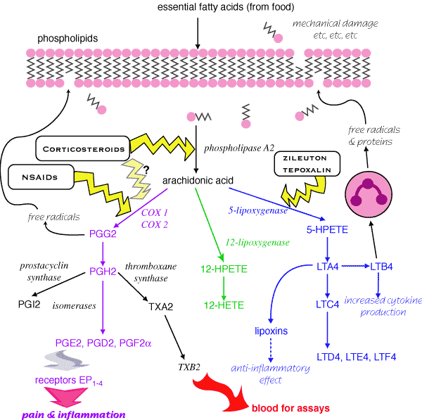

Cyclo-oxygenase exists in at least two forms:
COX1 - constitutive - responsible for physiological production of PGs
COX2 - inducible - produces PGs during inflammation
Nearly all currently used veterinary drugs inhibit both (but to different degrees). Since most side effects are caused by inhibition of COX1, drug development is focussing on finding drugs which only inhibit COX2. However, there are big species differences.
Specific COX2 inibitors have been shown to increase the risk of death from cardiac disease in people, no info in domestic animals.
There are major differences in the efficacy of NSAIDs against the cyclo oxygenase
enzymes of various species and tissues. This may be due to variable affinities
for COX1 & COX2 (this also varies between species).
Selectivity for COX2 in the dog (although these figures are contentious):
carprofen 129
fenamates 15
meloxicam 3
phenylbutazone 2.6
flunixin 0.6
ketoprofen 0.2
aspirin <0.3
Etodolac may be selective for COX2 in horses.
Differences in efficacy may also be caused by difference in predominant end product normally generated by the isomerases of different cells e.g. platelets & thromboxane or neutrophils & PGE2 and PGI2; variable penetration to the site of action or different microenvironments which affect drug enzyme affinity. This can be of clinical importance: COX 2 inhibitors increase the risk of thromboembolism by blocking PGI2 but not TXA2.
Some newer products also inhibit the lipoxygenase pathway.
Acetyl salicylate (aspirin) irreversibly inactivates the cyclo oxygenase of platelets (COX 1) by acetylating it. Most other NSAIDs in most cell types bind reversibly and competitively to cyclo-oxygenase.
The arachidonic acid cascade. nb. cyclo - oxygenase inhibition is usually assessed by measuring the reduction in circulating thromboxane B2 rather than PGE2 levels in the relevant tissue, which may well be different.